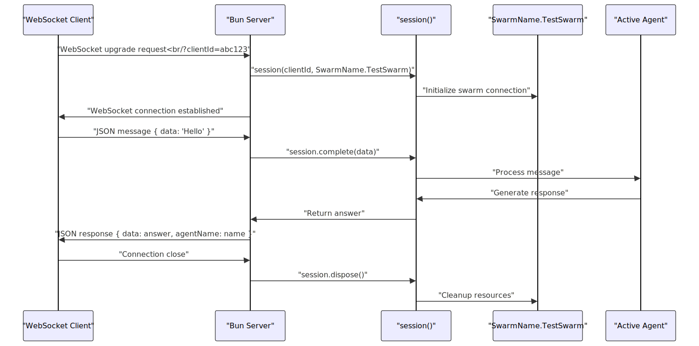

This document demonstrates a WebSocket-based chat application built with the agent-swarm-kit framework, showcasing real-time bidirectional communication between clients and AI agents. The example illustrates how to create a server that manages persistent agent sessions and a client that provides an interactive command-line interface for chatting with agents.
For information about building multi-agent systems with agent orchestration, see Building Multi-Agent Systems. For details about session management and lifecycle, see Session Management.
The client-server chat example consists of two main components: a WebSocket server that manages agent sessions and a command-line client that provides an interactive chat interface. The system demonstrates the session API for persistent connections, real-time message processing, and proper resource cleanup.
System Architecture

The server implementation uses Bun's WebSocket capabilities to handle real-time connections with agent sessions. Each client connection is associated with a unique clientId and maintains a persistent session with the agent swarm.
Server Connection Flow

The server defines a WebSocketData type to maintain session state:
type WebSocketData = {
clientId: string;
session: ReturnType<typeof session>;
};
The server extracts the clientId from URL parameters and creates a session instance during the WebSocket upgrade process. The session is initialized with SwarmName.TestSwarm and stored in the WebSocket data object for later use.
Incoming messages are parsed as JSON and passed to the session's complete method. The server responds with both the agent's answer and the current agent name obtained from getAgentName().
When a WebSocket connection closes, the server calls session.dispose() to properly clean up resources and prevent memory leaks.
The client provides a command-line interface for interacting with the chat server. It uses WebSocket for real-time communication and readline for user input handling.
Client Architecture

The client generates a random clientId and establishes a WebSocket connection to the server with the client ID as a URL parameter.
The client uses Subject from functools-kit to manage bidirectional communication streams. Incoming messages trigger the incomingSubject, while outgoing messages are handled by the outgoingSubject.
The client implements an interactive question-answer loop using readline. It measures response time and displays both the agent name and response data.
The communication protocol uses JSON messages with a simple structure for both directions.
Message Format
| Direction | Structure | Description |
|---|---|---|
| Client → Server | { data: string } |
User message wrapped in data field |
| Server → Client | { data: string, agentName: string } |
Agent response with current agent name |
Protocol Flow

The example demonstrates key agent-swarm-kit concepts including session management, agent interaction, and resource lifecycle.
Framework Integration Points

The example demonstrates proper session lifecycle management:
session(clientId, SwarmName.TestSwarm) creates a persistent sessionsession.complete(data) handles user input and generates responsesgetAgentName(clientId) retrieves the current active agent namesession.dispose() releases resources when the connection closesThe project uses several key dependencies for WebSocket communication and agent integration.
Key Dependencies
| Package | Purpose | Usage |
|---|---|---|
agent-swarm-kit |
Core framework | Session management, agent interaction |
functools-kit |
Utilities | Subject for event handling, randomString |
ollama |
AI model integration | Backend AI completion (implied) |
openai |
AI service | Alternative completion provider |
Build Scripts
The project provides npm scripts for running both client and server components:
start:client: Runs the client CLI interfacestart:server: Starts the WebSocket serverbuild:docs: Generates documentationThis example serves as a foundational template for building real-time chat applications with agent-swarm-kit, demonstrating proper WebSocket handling, session management, and integration with the framework's core APIs.